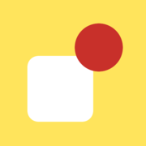

Area Educatore
Prepara le scene dell'utente e scegli come proporle.
- Coppie di opposti: sopra/sotto, dentro/fuori, davanti/dietro, accanto/in mezzo e altre
- Simboli del libro, scatola e cesto, pittogrammi ARASAAC o foto tue
- Pause per la domanda e la conferma in LIS
- Risultati per concetto e per sessione
Area Utente
Le scene compaiono una alla volta. Nessuna parola e nessun suono: solo immagini.
- Riconosci: tocca la tessera giusta fra le due
- Esegui: porta l'oggetto nel posto giusto
- Rinforzo visivo; per uscire tieni premuto il lucchetto

Si apre a tutto schermo come un'app, con la sua icona sulla schermata Home, e funziona anche senza connessione.
Tutto resta su questo dispositivo, senza account e anche senza connessione (serve solo per cercare i pittogrammi ARASAAC). L'educatore prepara le scene qui oppure sul computer, e con la copia di sicurezza (Impostazioni) le porta sul tablet dell'utente. Prima di ogni scena l'educatore fa la domanda in LIS («dov'è l'oggetto? dentro o fuori?») e tocca Avanti; compaiono le due tessere e l'utente risponde. Dopo la risposta l'educatore conferma in LIS e tocca di nuovo Avanti.